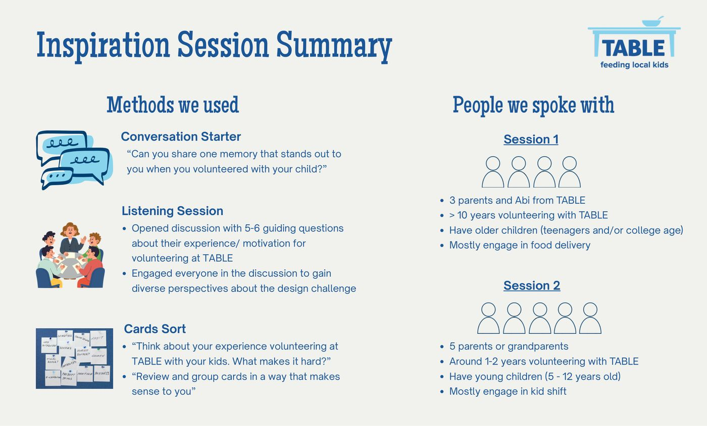
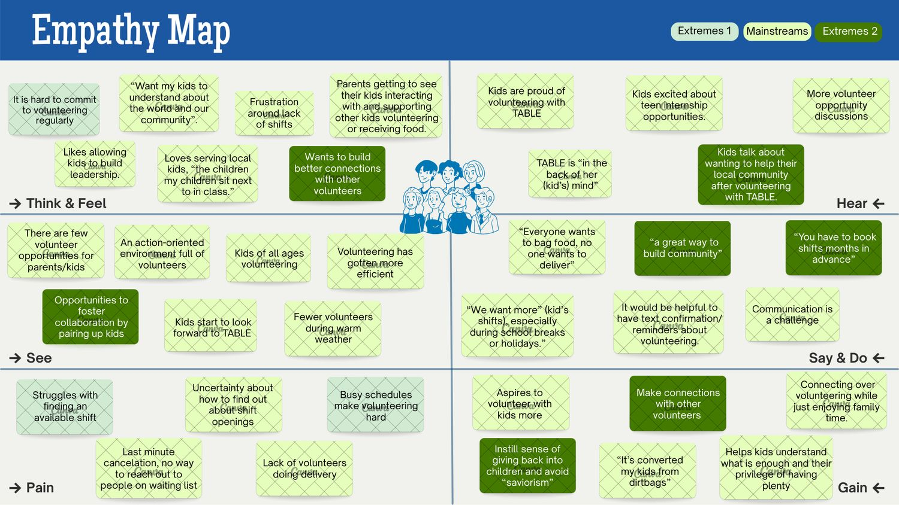
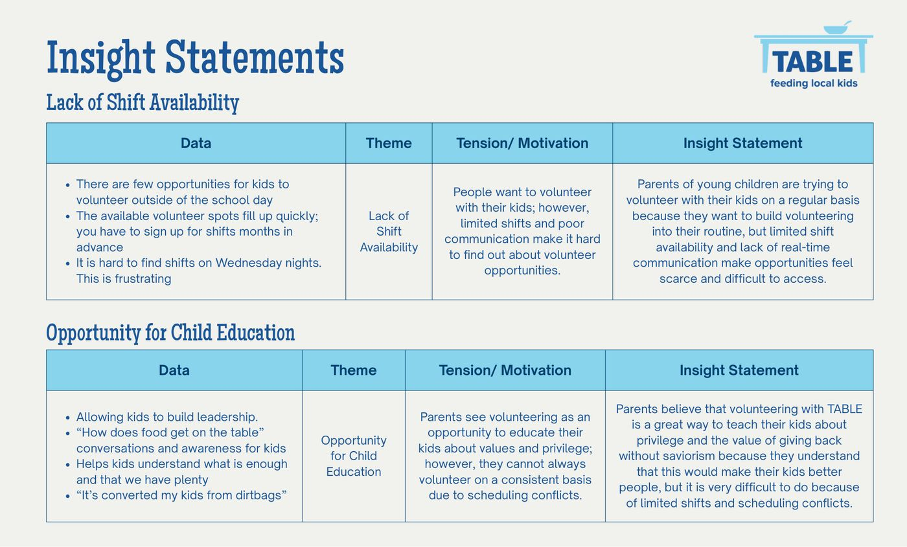
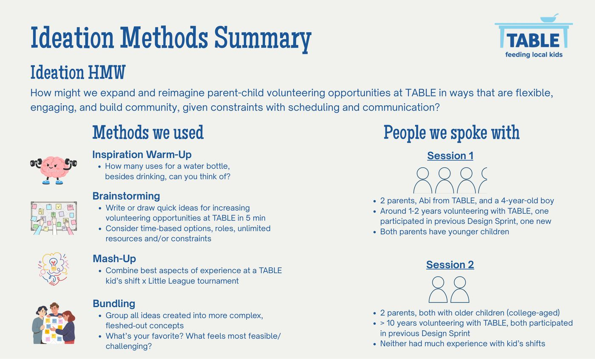
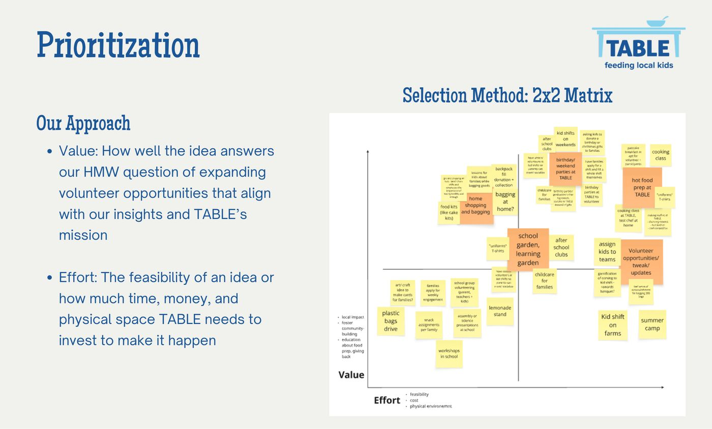
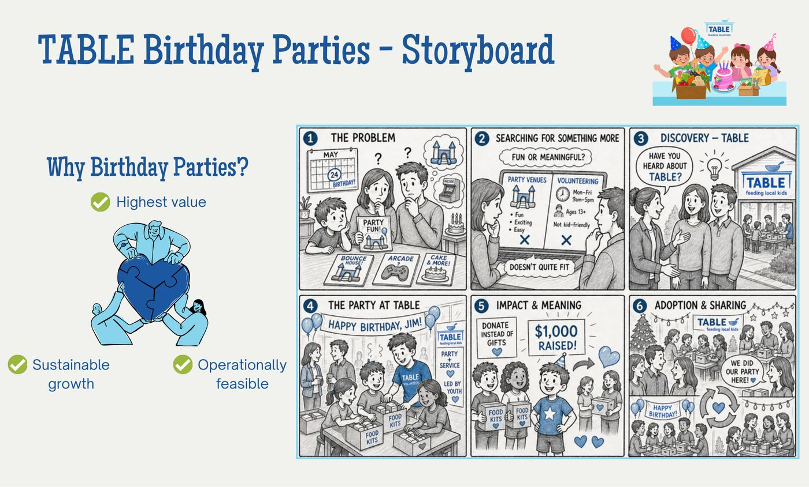
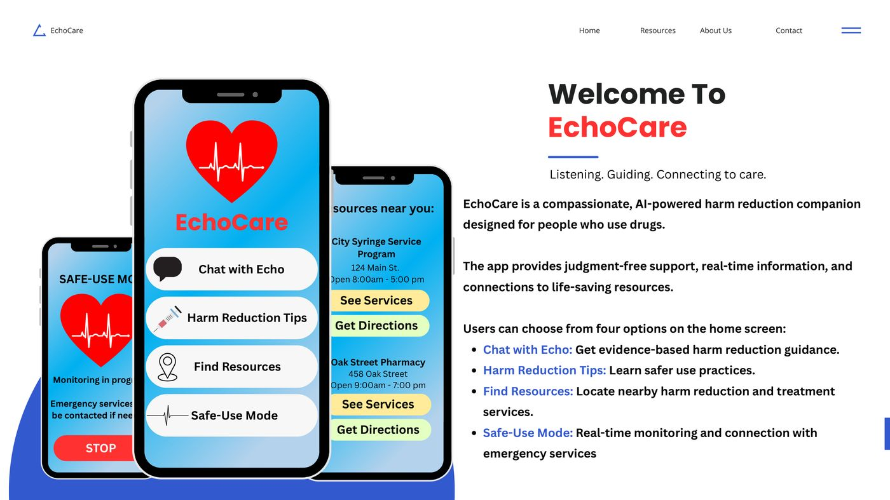
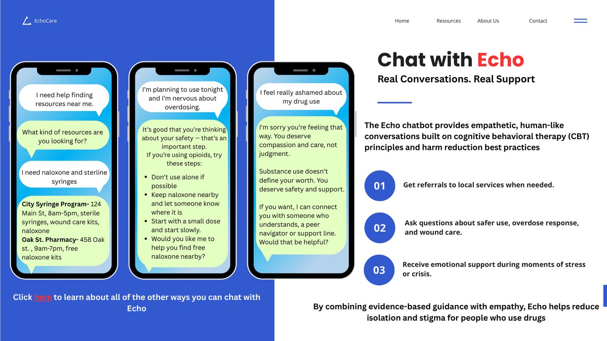
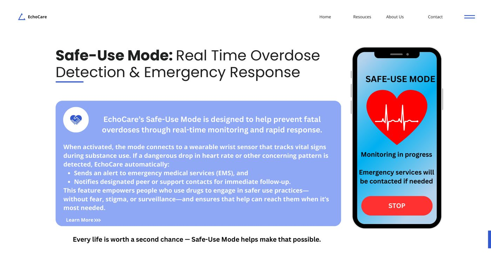
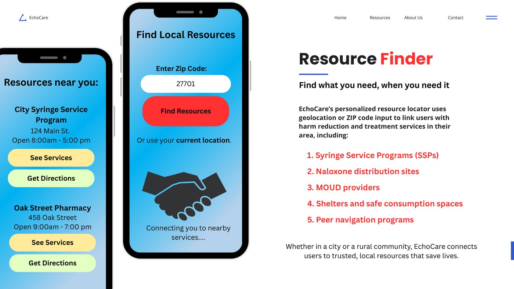

I run the messy front half of the design process — the part where you don't yet know what the problem is. Generative research, synthesis, and framing, then carrying insights forward into concepts a team can actually build.
A semester-long human-centered design engagement with TABLE, an Orange County nonprofit that feeds food-insecure kids. We were asked to grow family volunteering — and found that the real constraint wasn't willingness at all.
"How might we create more opportunities for parents to volunteer alongside their children to advance TABLE's mission while fostering a culture of volunteerism and social justice?"
After discovery, we reframed it: How might we expand and reimagine parent-child volunteering at TABLE in ways that are flexible, engaging, and build community — given real constraints with scheduling and communication? The shift matters. The original brief assumed we needed to motivate people. Research showed motivation was never the bottleneck.
We ran two listening sessions with deliberately different participant profiles, because "parents who volunteer" is not one user group. Session one drew long-tenured families with teenagers who mostly do food delivery. Session two drew newer families with young children who mostly do kid shifts. Those two groups turned out to have almost inverse pain points.

We mapped everything onto a Think & Feel / See / Hear / Say & Do / Pain / Gain grid, colour-coding by whether a data point came from an extreme user or the mainstream. Extremes are where the design opportunities hide — the person who's been volunteering for ten years and the person who just started see completely different systems.

That asymmetry was the finding. Parents weren't unmotivated; they were structurally blocked. Every stated desire ("teach my kids about privilege," "connect with other volunteers," "see local impact") collided with the same wall: shifts book months out, communication is one-way, and there's no way to reach the waitlist when someone cancels last-minute.
We built each insight through a four-column chain — data → theme → tension/motivation → insight statement — so that every claim traced back to something a participant actually said. This is the part I carry over directly from qualitative research: an insight isn't a good line, it's a defensible one.
Parents of young children want to build volunteering into their routine, but limited shift availability and no real-time communication make opportunities feel scarce and hard to access.
Parents see TABLE as a way to teach kids about privilege and giving back without saviorism — but scheduling conflicts make consistency nearly impossible.
Families are motivated by seeing impact in their own community — "the children my children sit next to in class" — but limited participation cuts them off from feeling it.
Parents want to connect with other volunteers, but weekly turnover in who shows up means those relationships never compound.

We brought participants back for co-ideation rather than ideating at them. Warm-up divergent thinking first ("how many uses for a water bottle?"), then rapid sketching, then a mash-up exercise — TABLE kid's shift × Little League tournament — to force unfamiliar combinations. Bundling turned scattered ideas into coherent concepts.


Prioritizing on TABLE's effort rather than ours was a deliberate constraint. A concept that requires a nonprofit to hire staff is not a concept, it's a wish.
Families get a shopping list, assemble food or birthday kits at home on their own schedule, and donate them to TABLE. No fixed shift required.
Volunteer families cook nutritious meals on-site with food safety guidance, adding nutrition education for both volunteers and recipients.
Birthday parties hosted at TABLE where guests pack food kits, families redirect gifts as donations, and teen volunteers run activities as staff.
Each concept was written as a full value proposition across both user groups — for host families and for teen volunteers, separately — and stress-tested against ten desirability, feasibility, and viability assumptions. We then had participants dot-vote their top three riskiest assumptions, which is what a pilot should actually test first.

We never spoke to the people we were designing around — TABLE's recipient families. Two of three concepts touch them directly (hot meal prep, kit contents), and we built those on assumptions rather than evidence. In a longer engagement that's the first gap I'd close.
I'd also push harder on testing before recommending. We ended with a prioritized assumption list, which is honest, but a single low-cost prototype party would have converted our top-voted assumption from a guess into a finding.
A one-week rapid prototyping exercise: identify a public health problem, propose an AI-powered solution, and build a functional prototype. The result is a harm reduction companion app for people who use drugs — and an honest case study about the limits of designing without your users.
People who use drugs face stigma, criminalization, and fragmented access to the services that keep them alive — sterile syringes, naloxone, medication for opioid use disorder. The resources aren't uniformly absent; they're unevenly distributed, hard to navigate, and often gated behind institutions people have good reason to distrust. That's a discovery and access problem as much as a supply problem.
This is the domain I've spent years in — reentry health, harm reduction, rural opioid systems — so the problem framing draws on real subject expertise rather than a weekend of desk research.
EchoCare's home screen offers exactly four choices, because a person in crisis should not have to navigate an information architecture. Each maps to a distinct need surfaced in the literature.

The hardest design problem here wasn't layout — it was voice. In a stigmatized domain, the difference between a person engaging and closing the app is whether the first response reads as clinical judgment or as care. I scripted the chat flows explicitly, treating conversational copy as the primary interface.



I wrote an explicit exclusion and risk analysis into the proposal rather than treating it as a footnote:
EchoCare is a design concept grounded in secondary research and domain expertise. It has not been user-tested. I've spent several years studying substance use disorders, opioid use disorder, and health equity in the context of incarceration and reentry — so the problem space is well known to me.
But the people most affected by it have not yet had a voice in this design. I'm including that here rather than quietly omitting it, because a harm reduction tool designed without people who use drugs in the room is exactly the failure mode my academic work documents.
The proposal specifies a two-region pilot — one urban, one rural — to test usability, referral accuracy, and, most importantly, trust. Trust is the actual dependent variable here; an app that's technically accurate but reads as surveillance will not be used.
If I picked this up again, the first move wouldn't be more screens. It would be participatory sessions with people who use drugs and peer navigators, testing whether Echo's voice lands as care or as condescension.